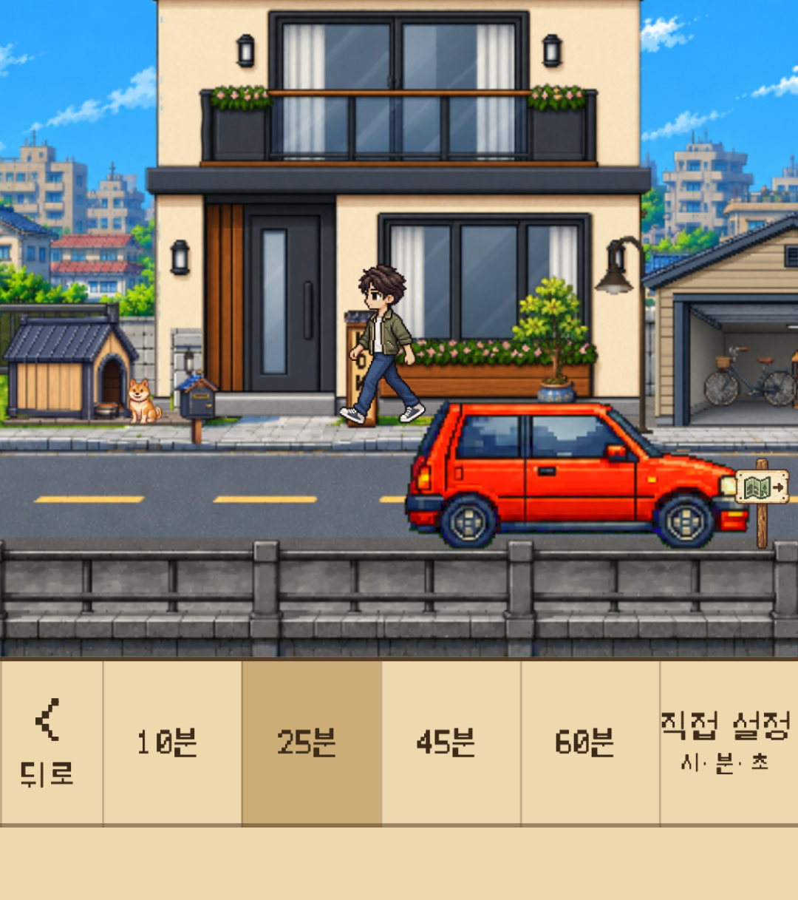
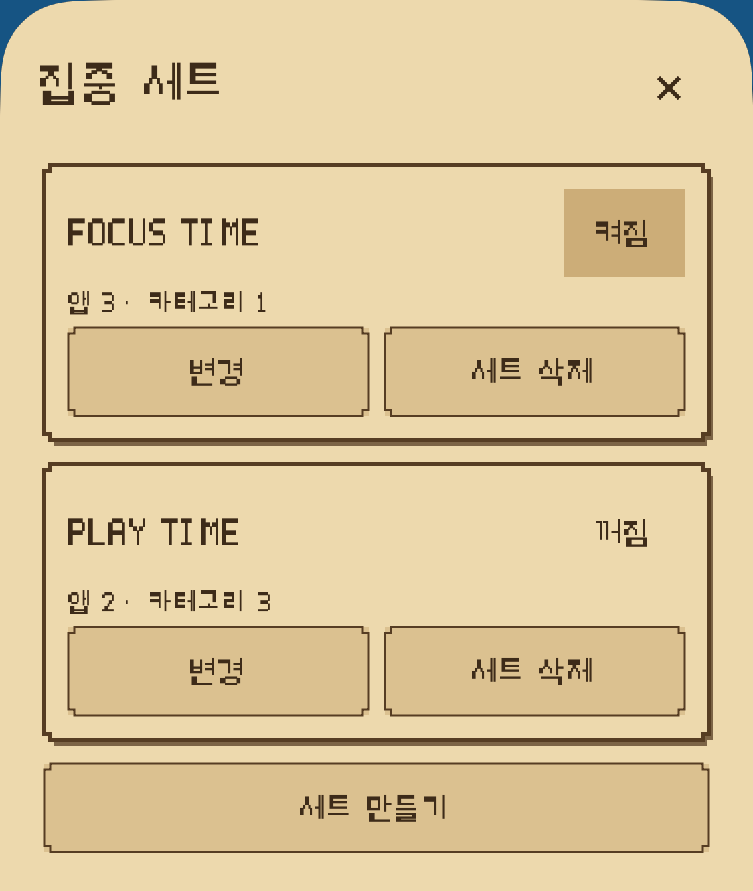
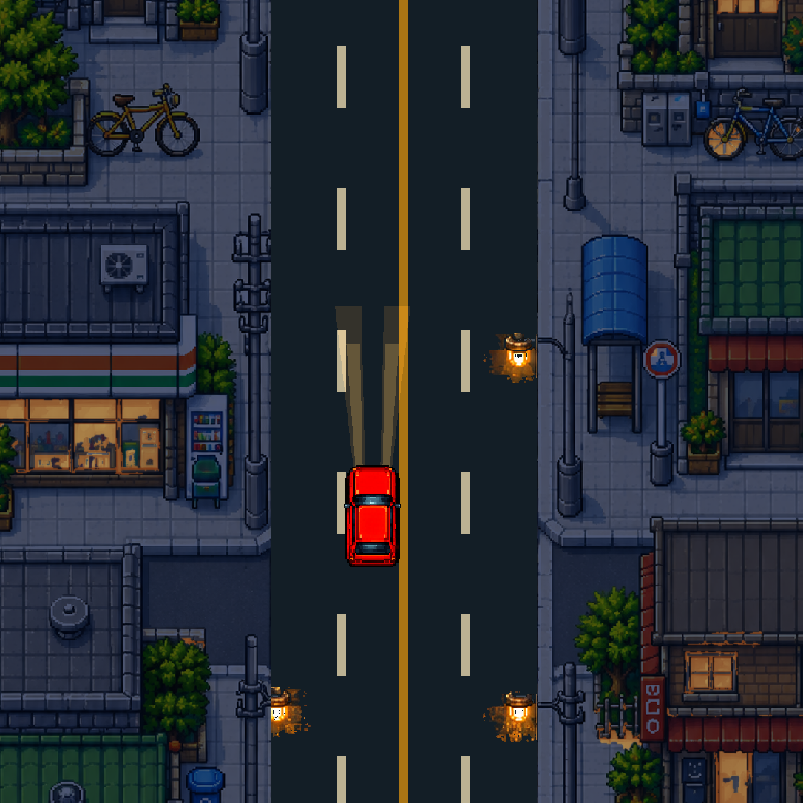
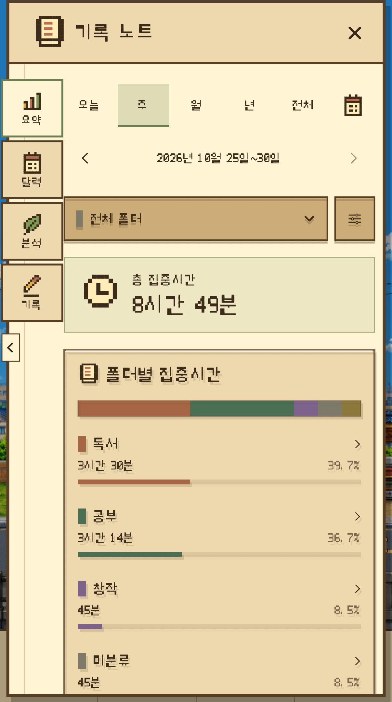
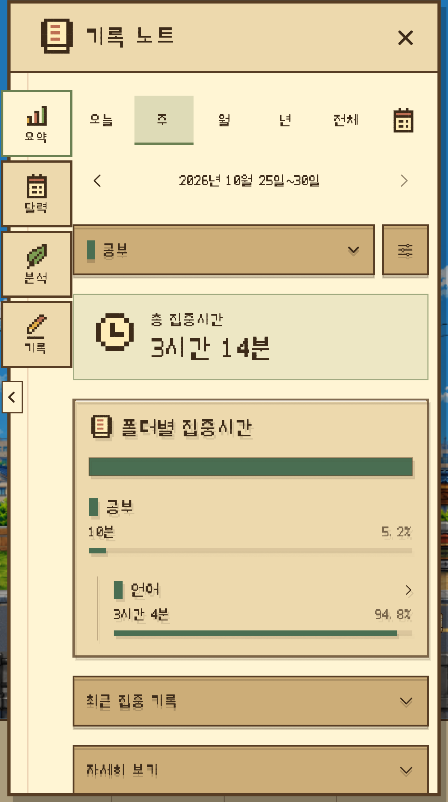
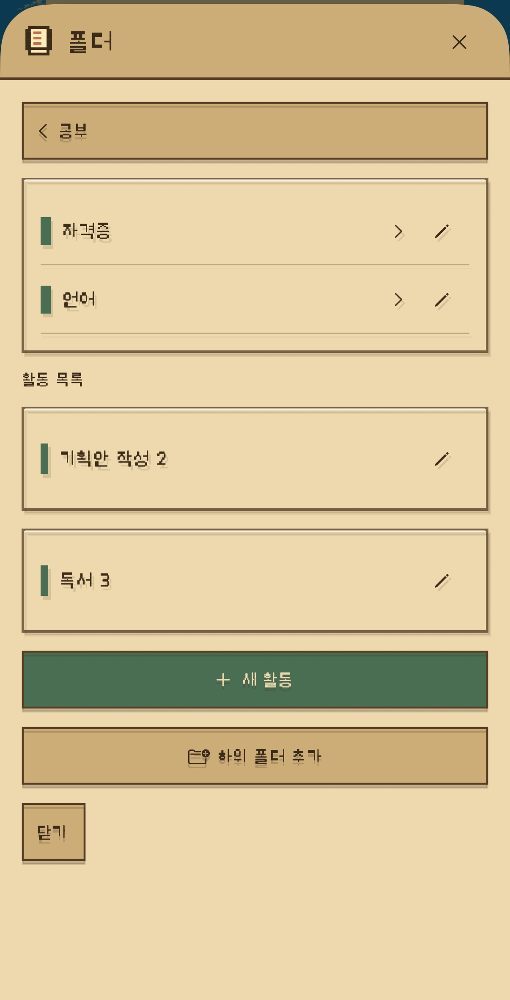
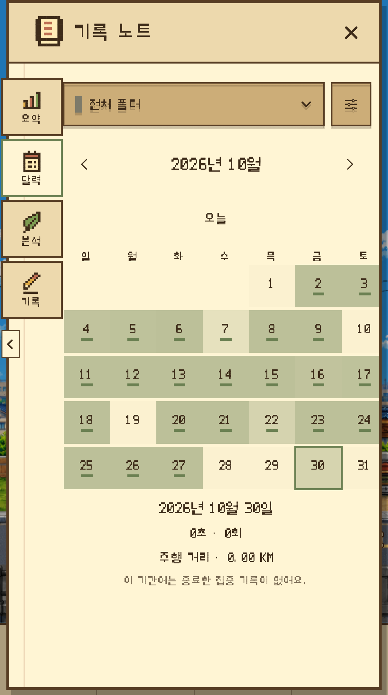
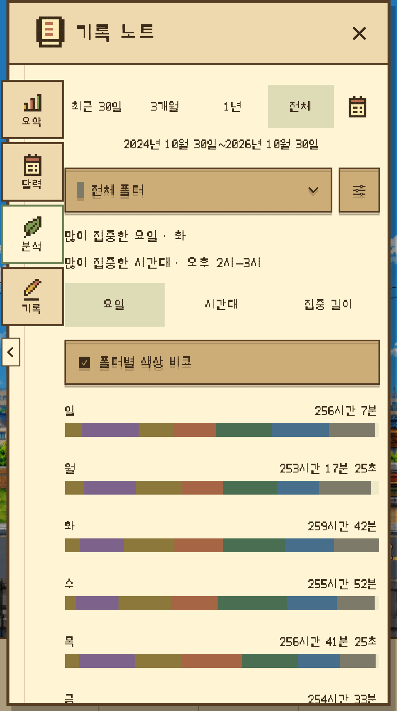
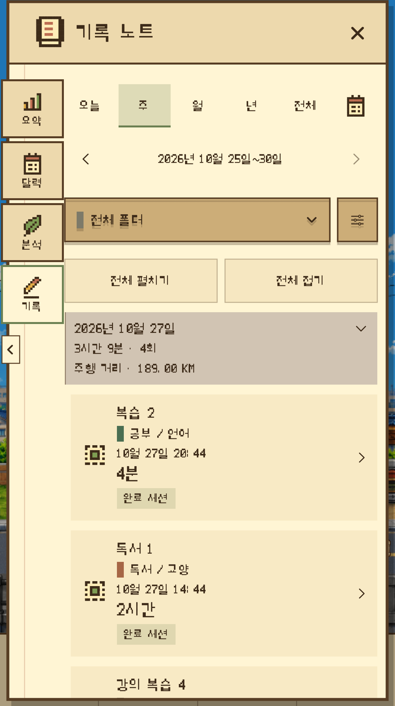

오늘의 집중을 준비해요
시간 프리셋이나 직접 설정으로 시간을 정하고, 집중할 활동을 고르세요. 필요하면 일시정지했다가 이어 갈 수 있어요.
집중을 기록하고, 나만의 세계를 키우는 타이머
타이머를 켜면 시작되는 작은 여행.
집중은 기록노트에 차곡차곡 남고,
나만의 Home을 키우는 힘이 돼요.
할 일에 몰입한 시간은 기록이 되고, 기록은 눈에 보이는 성장으로 이어져요. 다시 돌아와 집중하고 싶은 작은 이유를 만들어 보세요.
01 / FOCUS & DRIVE
공부, 독서, 작업. 집중할 시간을 정하면 자동차가 픽셀 도시를 달려요. 풍경은 흘러가고, 나는 지금 할 일에 머물러요.
시간 프리셋이나 직접 설정으로 시간을 정하고, 집중할 활동을 고르세요. 필요하면 일시정지했다가 이어 갈 수 있어요.
Focus Lock으로 선택한 앱·카테고리를 차단해요. 잠금화면 Live Activity와 완료 알림으로 남은 시간과 마무리를 확인하세요.
자동 주행·직접 조작, Top View·Side View, 낮·저녁과 맑음·비. 주행 속도도 취향에 맞게 고를 수 있어요.

화면 크게 보기
화면 크게 보기
화면 크게 보기02 / FOCUS JOURNAL
기록노트는 나의 집중을 돌아보는 공간이에요. 공부와 작업을 폴더로 정리하고, 나에게 잘 맞는 집중의 리듬을 찾아보세요. Home 1단계에서 우편함을 해금하면 기록노트를 열 수 있어요.

화면 크게 보기FOCUS JOURNAL / 01
일·주·월·년·전체·직접 설정한 기간으로 집중시간을 돌아봐요. 최근 세션과 자세한 통계도 필요할 때 펼쳐 볼 수 있어요.
실제 앱 화면 · 기록은 촬영용 샘플 데이터입니다.

화면 크게 보기FOCUS JOURNAL / 02
공부, 작업, 개인 프로젝트. 폴더와 하위 폴더에 쌓인 시간을 비교하고, 폴더를 선택해 해당 기록을 더 자세히 살펴봐요.
실제 앱 화면 · 기록은 촬영용 샘플 데이터입니다.

화면 크게 보기FOCUS JOURNAL / 03
자주 하는 활동을 저장하고 최근·즐겨찾기에서 빠르게 골라요. 폴더와 하위 폴더로 나누면 다음 집중도 가볍게 시작할 수 있어요.
실제 앱 화면 · 기록은 촬영용 샘플 데이터입니다.

화면 크게 보기FOCUS JOURNAL / 04
어느 날 얼마나 집중했는지 달력으로 확인해요. 날짜를 골라 그날의 세션을 살펴보고, 나만의 흐름을 이어 가세요.
실제 앱 화면 · 기록은 촬영용 샘플 데이터입니다.

화면 크게 보기FOCUS JOURNAL / 05
집중시간의 변화와 완료 횟수를 살펴보고, 요일·시간대·집중 길이별 패턴을 비교해요. 다음 집중을 계획할 작은 힌트를 얻을 수 있어요.
실제 앱 화면 · 기록은 촬영용 샘플 데이터입니다.

화면 크게 보기FOCUS JOURNAL / 06
기간과 폴더로 세션을 찾아 상세 내용을 확인해요. 기록의 활동 이름이나 폴더를 수정해, 나중에도 읽기 좋은 나의 기록으로 정리하세요.
실제 앱 화면 · 기록은 촬영용 샘플 데이터입니다.
03 / MAKE IT YOUR HOME
작은 시작에서 돌아오고 싶은 공간으로. Home 0단계부터 35단계까지, 한 번의 집중이 나만의 세계에 조금씩 남아요.


누적 25분 집중 → Stamp 1개 → 모은 Stamp로 Home 성장각 단계에 필요한 Stamp를 모아 직접 사용하면 다음 단계가 열려요. Stamp를 모으는 것만으로 자동 해금되지는 않아요. Free Drive에는 집중 보상이 없어요.
현재 일본 Home 35단계를 완료하면 해당 지역의 남은 Stamp와 Stamp 적립용 이월 시간은 0이 되고, 추가 Stamp 지급은 종료돼요. 집중시간·세션 기록·배지는 계속 누적돼요.
성장하면서 열리는 작은 선택들. 아바타와 자동차, 명패에 나만의 취향을 더해요.
성별·피부·헤어·의상을 골라 나만의 아바타를 꾸며요.
빨간 자동차와 흰 자동차 중 골라 Home과 드라이브에 적용할 수 있어요.
Home에 나만의 이름을 남겨요.
04 / A MOMENT TO UNWIND
카페에 도착하면 휴식 타이머를 켜고 잠시 쉬어가세요. 오리지널 음악과 환경음, 작은 효과음까지 취향에 맞게 조절하며 여유를 즐겨보세요.

05 / YOUR TIME, KEPT CLOSE
개인 iCloud로 집중 기록과 Home의 성장을 동기화해요.
파일로 백업하고 가져올 수 있어요. 구매 복원과 기록 복구는 별개예요.
한국어·일본어·영어로 나만의 여정을 이어 가세요.
06 / FREE TO WANDER
Free Drive
Free Drive는 시간 제한 없이 풍경을 즐기는 자유 주행이에요.
Focus Drive Pass
일본 지역 Focus Drive를 실제 집중시간 누적 75분까지 무료로 이용해 보세요. 이후에는 Focus Drive Pass를 한 번 구매해 계속 이용할 수 있어요.
현재 Focus Drive Pass는 일본 지역 Focus Drive에 적용돼요. 추가 지역은 아직 이용할 수 없으며, 향후 출시되면 별도 구매가 필요할 수 있어요.
DAYROAD / APP PREVIEW
실제 앱 화면으로 Dayroad의 분위기를 만나보세요. 소리는 재생 후 직접 켤 수 있어요.
25 SEC / KO
07 / BEFORE YOU GO
현재 App Store 호환성 기준 iPhone, iOS 17.0 이상을 지원해요. 앱 언어는 한국어·일본어·영어예요. 최신 설치 가능 여부는 App Store에서 확인해 주세요.
아니요. Focus Drive Pass는 직접 선택해 구매하는 일회성 상품이에요. 구독·자동 갱신·체험 후 자동 결제가 없으며, Free Drive는 계속 무료예요.
실제 집중시간 누적 25분당 Stamp 1개를 모아요. 단계별 필요 Stamp를 직접 사용해 Home을 성장시키면 자동차는 2단계, 아바타는 3단계, 명패는 5단계에서 열려요. Free Drive는 집중 보상을 주지 않아요. 강아지는 Home 6단계에서 만나요. 여행 지도책에서 현재 일본 지역과 Home 성장 여정을 확인할 수 있어요.
이용권은 구매한 Apple 계정으로 구매 복원을 이용해요. 기록·Stamp·Home은 개인 iCloud 동기화 또는 JSON 백업으로 별도 복구해요. 기기를 바꾸기 전 기존 기록을 먼저 백업해 주세요.
App Store에서 만나보세요
집중을 기록하고, 작은 세계를 키워 보세요.
iPhone · iOS 17 이상